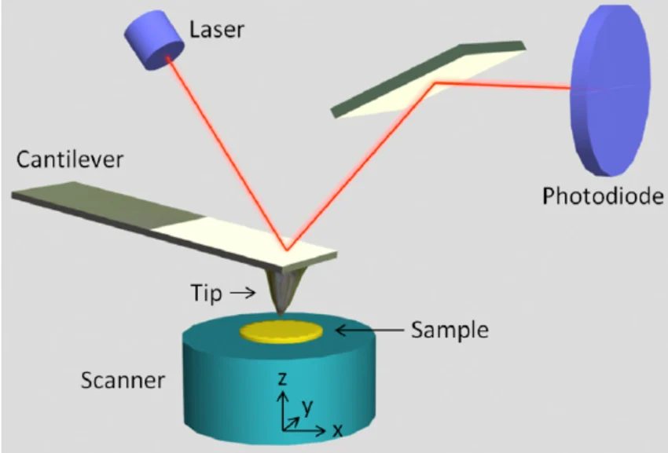

Piezoelectric Applications
The piezoelectric effect allows materials to translate mechanical vibrations into electrical signals, and vice-versa. This functional property is used extensively across multiple industries:
- Microphones: Sound vibrations physically deform a piezoelectric crystal inside the diaphragm, converting the sound into a storable electrical signal.
- Kinetic Energy Harvesting: "Smart Pavements" utilize footsteps to compress piezoelectric ceramics, harvesting ambient kinetic energy to power local lighting.
- Actuators: In an Atomic Force Microscope (AFM), a piezoelectric scanner expands or contracts when a specific voltage is applied, allowing for incredibly precise nano-scale movements.

TiO2 in Self-Cleaning Surfaces
Self-cleaning windows are coated with a nanoscale layer of Titanium Dioxide (TiO2), which functions via two distinct mechanisms:
- Photocatalytic: The coating is activated by ultraviolet (UV) rays from the sun, causing a series of chemical reactions that break down and loosen dust and organic particles.
- Super Hydrophilic: The TiO2 alters the surface tension of the glass. When it rains, rather than beading up, the water forms a perfectly flat, even sheet that seamlessly washes away the decomposed dust particles.
Watch the video below to explore how these advanced functional materials are utilized in sensors, batteries, and smart surfaces:
Practice Exercises
Test your knowledge on Piezo applications and TiO2 surfaces.
1. How do piezoelectric microphones function?
A) They use a laser to read sound waves
B) Sound vibrations deform a crystal, which converts the mechanical energy into an electrical signal
C) They use thermal heat to generate magnetic fields
2. In an Atomic Force Microscope, what is the role of the piezoelectric scanner?
A) It acts as an actuator, using applied voltage to create nano-precision movements
B) It acts as a camera lens to bend light
C) It measures the temperature of the sample
3. What specific type of energy triggers the photocatalytic reaction in TiO2 self-cleaning windows?
A) Infrared radiation
B) Ultraviolet (UV) rays
C) Kinetic friction
4. Aside from breaking down dirt, what other property does TiO2 impart to a self-cleaning window?
A) It makes the surface super hydrophilic, causing water to form an even sheet
B) It makes the surface superhydrophobic, causing water to aggressively bead up
C) It turns the window completely opaque
5. "Smart Pavements" utilize piezoelectric materials for what specific purpose?
A) To act as a gas sensor
B) To melt snow using thermal conductivity
C) To harvest kinetic energy from footsteps to generate electricity